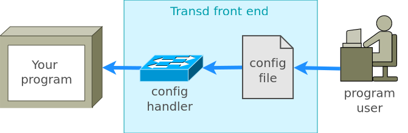

Extending or customizing the program's functionality; scripting the program's behavior; processing configuration files from simple to very advanced.
Transd can be integrated into a program as a two-file C++ library or can be bundled as an executable file.
Transd is a full-fledged programming language with many advanced features. It's cross-platform, fast, and extremely compact: it's implemented just in two source files and doesn't have any dependencies.
Task: Your program has configuration needs from simple to moderately complex.
Solution: The configuration file(s) for your program can be organized as named sections with lists of name/value items:
network : {
siteName: "localhost",
requestPassword: true
}
users : {
usernames: ["alice", "bob", "tom"],
userquotas: [35, 35, 30]
}
Transd has built-in support of such format and can process such files with almost no customization. Values in name/value pairs can be strings, integers, floats, booleans, and lists of these. Transd reads and validates configuration files and returns the processed results via C++ API or standard output.
Task: Your program should handle complex configuration that possibly includes typed objects, user-defined functions, type checking, values checking, etc.
Transd provides an effective solution for handling complex configurations. It combines, on the one side, a simple and clear syntax of configuration files, which nonetheless allows to express complex things, such as object-oriented configuration with type checking and support of user-defined scripts. On the other side, it provides effective means for converting and transferring the information from configuration files to the host program with much less amount of code than a written from scratch solution would require.

An example of handling a moderately complex configuration can be seen in a demonstration program.
Task: your program has functionality that may be customized or extended. This customization can be implemented in Transd.
For example, for graphics rendering programs, new rendering functions can be written; for data processing programs - custom parsers for handling new data formats, etc.
A simple example of extending a graphics program with a rendering function written in Transd can be found here.
Task: you have a simple, script-like program, which should be multi-platform, and run without installing any pre-requisites such as a particular programming language, environment or library.
You can write your program in Transd and ship it with a launcher executable, whose code is written in C++. The laucher source apart from the embedded Transd compiler library, can have just several lines of code that starts your Transd program in the embedded Transd compiler.
In this variant your program distribution will consist of a single executable, containing the launcher, and one or more source files containing your Transd program.
An example of "thin host" scheme is FREND interpreter, which can run any Transd program, and whose very small source only contains the code for reading commands and running them in the compiler.